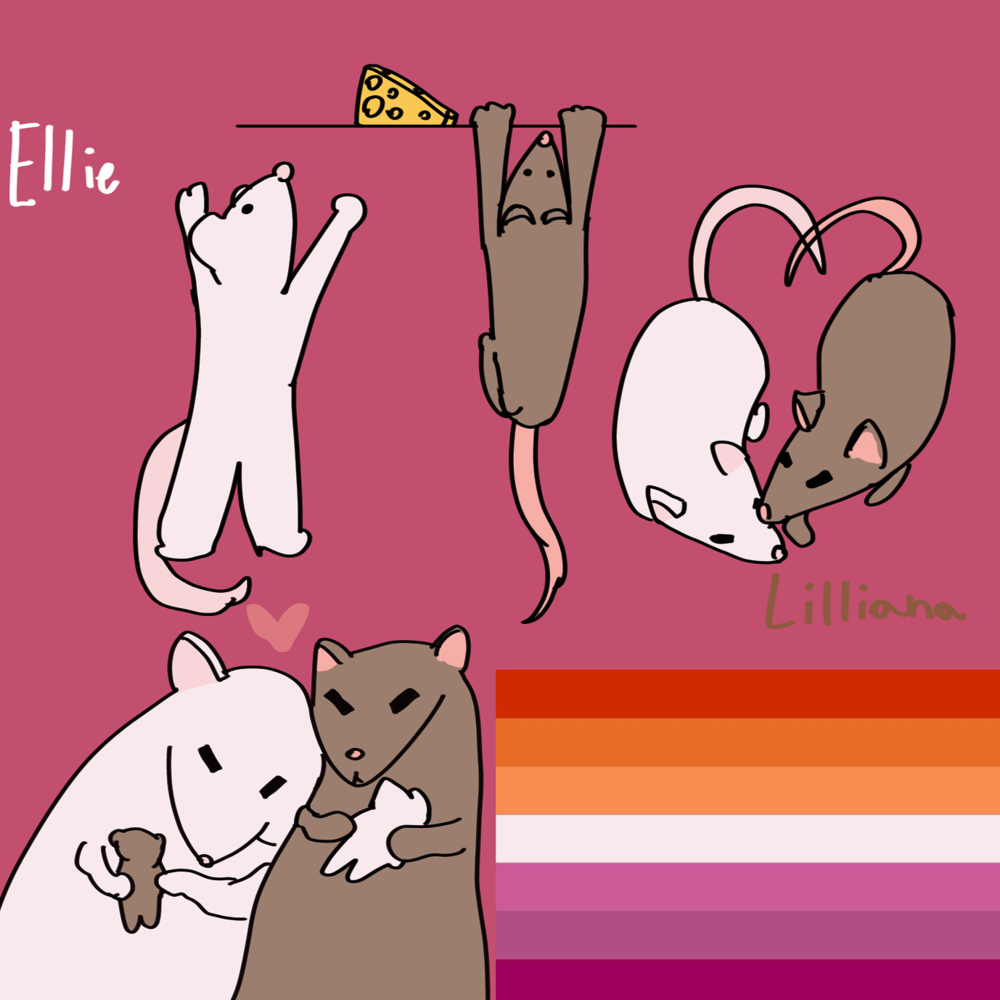

HomeNo. No no no no no no no no no no NO. I watch. Unable to move. Unable to blink, or breathe, or speak. I can't do anything. Why is this happening? What did sheshe do to deserve this? My lover gasps, small whimpers that shatter me escaping her every few minutes. Blood pools around them. Too much blood. Her face is pale and sickly, splattered with the contrasting red that shouldn't be there. Should've never been there. Elestra. The most beautiful princess in the country, and my partner. A lovely lady who has a voice of silk and a heart of gold, so sweet and kind... I would die for them, over and over, just so she would smile. Her breathing slows. Then it stops. I can move again. I rush over to her but just before I can touch her, everything turns white. For a moment, just a moment, everything is still. I can't see, I can't hear, I can't feel... It's not peaceful. But it's quiet. And then everything rushes back. The panic, the fear, everything.. Except for the bloody scene. I am now lying on the bed. With Elestra. She's breathing, she looks okay, she's fast asleep. The faint sunlight from the window gives me a view of the dark room. It's barely dawn yet. My breathing comes fast and shallow, tears still remain on my face, but she's there. Was it all just a dream? Just a horrific nightmare? It felt so real… I am pulled from my thoughts by a soft sleepy voice. "Meriel..? Are you alright?" Elestra mumbles, her voice barely a whisper in the quiet room. I nod, barely able to get a word out myself. She's okay… She's okay. "I'm okay, love, go back to sleep" "But you're crying…" Her thumb brushes the tears from my face as she says this. I struggle to think of an excuse before a knock on the door breaks the silence. "Miss? Is everything okay in there?" One of the guards. I hold my breath. If they find out I'm here… "Everything's fine. I'm simply reading." Elestra's voice comes out flat, successfully hiding anything that might suggest she's having a conversation with somebody else. "Well you mustn't spend all morning in there, your duties begin soon." Then footsteps sound back away from the door. He left. Elestra gives me a look.. She's worried but she knows she can't interrogate me right now. We both get out of bed. My own work begins soon so I can't stay much longer either, sadly. But my mind keeps drifting to that nightmare. It felt so real… I keep glancing at Elestra just to make sure she's still there. She is. And so, I put my fear aside and we both attend to our daily lives of pretending we don't have any relationship outside of my delivering letters to her. I follow her to the door, not quite ready to go our separate ways yet but I don't complain. We both step out but— squelch Elestra gasps. Then falls. I don't understand what's going on for a second but then I look down… No. No, not again. I struggle to stop the bleeding. I attempt to heal her, but my magic isn't working… And then the scene turns to white again. And once again. I'm in bed with Elestra.
This time Elestra doesn't wake up while I'm hyperventilating. She's still sleeping. What is going on? Clearly that wasn't a nightmare… But she's not bleeding anymore. I sit up, careful to not move too much on the bed. I try to think of what this could be. Hell? Did I die? A nightmare I just can't wake up from? Or A curse. It would make the most sense, things like this don't happen out of nowhere. But who would do that? I've pissed off a lot of people in my time. This could be anyone.